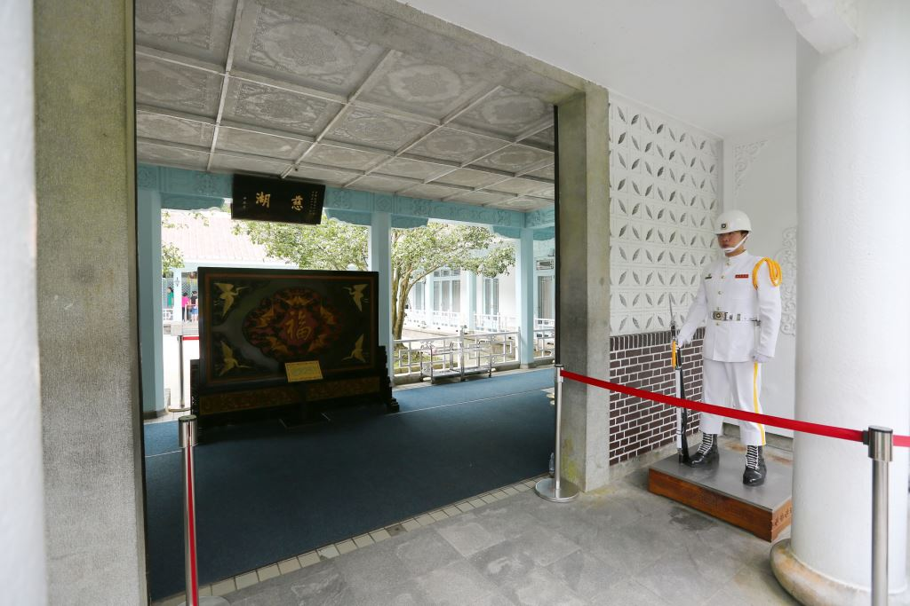

慈湖陵寢因蔣公長眠於此而聞名，也是世界各地謁陵緬懷一代偉人的聖地。慈湖分為前、後慈湖，湖岸水色迷人，楊柳垂青頗有江南風光之美，當年蔣公以此處酷似浙江奉化老家，並對母親思念之情，而命名為慈湖，並闢建行館(閩浙混合式建築)，民國六十四年逝世便奉厝在此。
慈湖除了謁陵，最重要的觀光點是儀隊的換班儀式，由三軍輪流擔任的儀隊，每小時換班的花式操槍，最讓國內外遊客們喜愛，攝影機閃光燈總是閃個不停。 由於早期列為禁區管制，慈湖許多生態環境都受到了保護，原始風貌不受到破壞，不僅林木扶疏，有著清幽氣息，每到秋冬之際楓紅山頭，更是美麗。